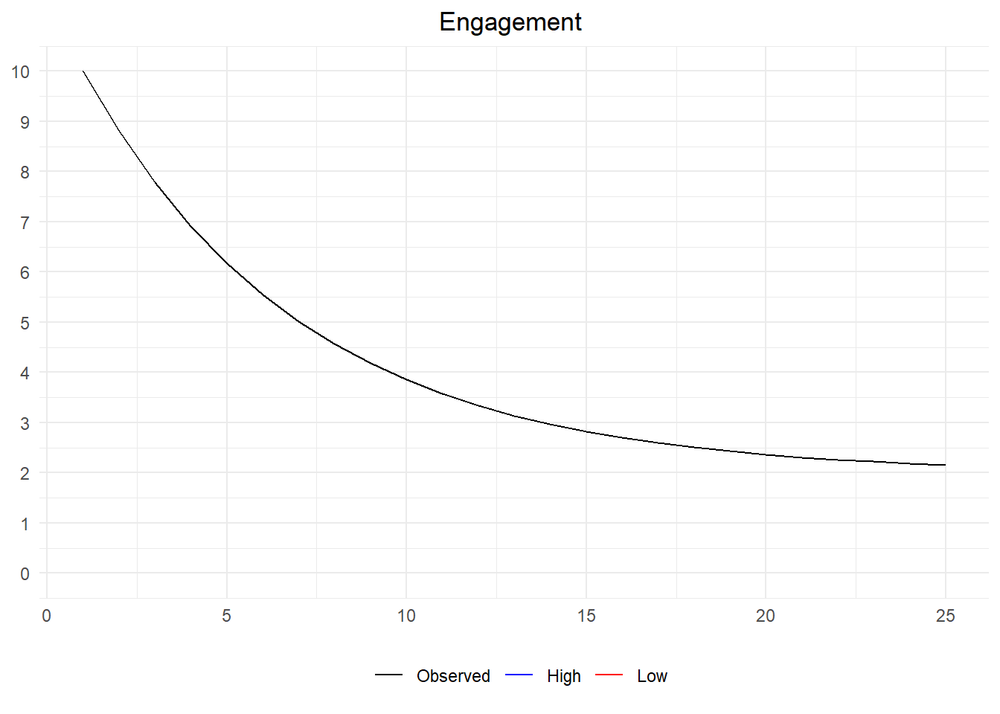

set.seed(123)
n <- 1000
x1 <- runif(n)
x2 <- runif(n)
y <- x1 + x2 > 1
df <- data.frame(x1, x2, y)
with(df, cor(x1, x2))
with(df[df$y,], cor(x1, x2))[1] -0.05927849
[1] -0.5003105Previously, we have seen how different inputs like data, tools, and methods can add risks to our data analysis. However, the battle is not won simply when we get our first set of outputs. In this chapter, we will explore common errors in interpreting the results of our analysis by exploring aspects of bias, missingness, and confounding.
set.seed(123)
n <- 1000
x1 <- runif(n)
x2 <- runif(n)
y <- x1 + x2 > 1
df <- data.frame(x1, x2, y)
with(df, cor(x1, x2))
with(df[df$y,], cor(x1, x2))[1] -0.05927849
[1] -0.5003105Warning: package 'ggplot2' was built under R version 4.0.5ggplot(df) +
aes(x = x1, y = x2, col = y) +
geom_point()
n <- 1000
minutes_month1 <- runif(n, 60, 1200)
minutes_month2 <- runif(n, 60, 1200)
minutes_tot <- minutes_month1 + minutes_month2
df <- data.frame(minutes_month1, minutes_month2, minutes_tot)Figure fig-sep-sum shows…
set.seed(123)
n <- 1000
x <- rnorm(n)
random_test <- function(x) {
indices <- sample(1:length(x), length(x)/2, replace = FALSE)
group1 <- x[indices]
group2 <- x[-indices]
tt <- t.test(group1, group2)
return(tt$p.value)
}
p <- vapply(1:10000, FUN = function(...) {random_test(x)}, FUN.VALUE = numeric(1))
sum(p < 0.05)[1] 500n_obsv <- 1000
n_vars <- 100
mat_cat <- matrix(
data = rbinom(n_obsv * n_vars, 1, 0.5),
nrow = n_obsv,
ncol = n_vars
)
mat_all <- cbind(x, mat_cat)
df <- as.data.frame(mat_all)
names(df) <- c("x", paste0("v", 1:n_vars))
head(df) x v1 v2 v3 v4 v5 v6 v7 v8 v9 v10 v11 v12 v13 v14 v15 v16 v17 v18
1 -0.56047565 1 1 0 1 1 0 1 0 0 1 1 0 1 1 0 1 0 0
2 -0.23017749 1 1 0 0 0 0 0 1 1 1 1 0 0 1 1 1 1 1
3 1.55870831 1 0 0 0 1 0 1 1 0 1 0 0 0 1 1 1 1 1
4 0.07050839 1 0 1 1 0 0 1 0 1 1 1 0 0 0 0 0 1 0
5 0.12928774 1 1 1 0 0 0 0 0 0 1 1 1 1 0 1 1 0 0
6 1.71506499 1 0 0 1 1 0 1 1 1 1 1 0 1 1 0 0 0 0
v19 v20 v21 v22 v23 v24 v25 v26 v27 v28 v29 v30 v31 v32 v33 v34 v35 v36 v37
1 0 1 0 0 1 1 1 0 0 0 0 1 0 0 1 0 0 0 1
2 0 0 1 0 1 0 1 0 1 0 0 1 1 0 1 0 0 0 1
3 0 0 1 0 1 1 0 1 0 0 0 1 0 1 0 0 1 1 1
4 0 0 1 1 0 1 1 0 0 0 0 1 1 1 1 0 0 1 0
5 0 1 1 0 0 0 1 0 1 0 0 1 0 0 0 0 1 0 1
6 1 1 0 0 0 1 1 0 0 1 1 0 1 1 0 0 0 1 1
v38 v39 v40 v41 v42 v43 v44 v45 v46 v47 v48 v49 v50 v51 v52 v53 v54 v55 v56
1 1 1 0 0 0 1 1 1 0 1 0 0 1 1 0 0 0 0 1
2 0 0 0 0 0 0 0 0 0 1 0 1 0 1 1 0 0 1 0
3 1 0 0 0 1 0 1 1 0 0 1 0 1 1 1 1 1 1 0
4 0 0 0 1 0 1 0 0 0 1 0 0 0 0 1 1 1 0 0
5 0 1 0 0 1 0 1 0 1 1 1 1 0 1 0 0 0 1 1
6 0 1 1 1 1 1 0 0 0 1 0 0 1 0 0 1 1 0 0
v57 v58 v59 v60 v61 v62 v63 v64 v65 v66 v67 v68 v69 v70 v71 v72 v73 v74 v75
1 0 1 1 0 0 1 0 0 0 1 1 1 0 0 0 0 1 0 0
2 1 0 1 1 0 1 0 1 1 1 1 0 1 1 0 1 1 1 1
3 0 1 0 1 0 1 1 1 1 1 0 1 0 1 1 0 1 1 0
4 0 0 1 0 1 1 1 1 1 0 1 0 0 0 1 0 1 0 0
5 1 0 0 0 0 0 1 0 1 0 0 0 1 0 1 1 1 0 1
6 1 0 1 1 0 1 1 0 1 0 1 0 1 0 0 0 1 1 0
v76 v77 v78 v79 v80 v81 v82 v83 v84 v85 v86 v87 v88 v89 v90 v91 v92 v93 v94
1 1 0 0 1 0 1 0 0 0 0 1 1 1 0 0 1 1 1 0
2 1 1 1 1 1 0 1 1 1 0 0 1 1 0 0 0 0 1 0
3 0 0 0 1 0 0 1 0 0 0 0 1 0 1 0 0 1 0 0
4 0 0 0 0 0 0 0 1 0 1 1 0 0 0 0 0 0 0 1
5 0 0 0 1 1 1 0 0 1 1 0 0 1 1 0 1 0 1 1
6 1 0 0 1 0 1 1 0 0 0 0 1 1 0 1 0 0 0 0
v95 v96 v97 v98 v99 v100
1 0 0 1 1 0 0
2 1 1 0 1 0 1
3 0 1 0 1 0 1
4 1 0 0 1 1 1
5 1 1 1 0 1 0
6 0 1 1 0 0 1t.test(x ~ v1, data = df)$p.value
t.test(x ~ v2, data = df)$p.value
t.test(x ~ v3, data = df)$p.value
t.test(x ~ v4, data = df)$p.value
# etc.[1] 0.09770958
[1] 0.8733535
[1] 0.02182194
[1] 0.1525164Success! ..Or success?
sample splitting with “train”
(obviously a very ugly way to do this, but that’s the point)
t.test(x ~ v1, data = df[1:(n_obsv/2),])$p.value
t.test(x ~ v2, data = df[1:(n_obsv/2),])$p.value
t.test(x ~ v3, data = df[1:(n_obsv/2),])$p.value
t.test(x ~ v4, data = df[1:(n_obsv/2),])$p.value
t.test(x ~ v5, data = df[1:(n_obsv/2),])$p.value
t.test(x ~ v6, data = df[1:(n_obsv/2),])$p.value
t.test(x ~ v7, data = df[1:(n_obsv/2),])$p.value
t.test(x ~ v8, data = df[1:(n_obsv/2),])$p.value
t.test(x ~ v9, data = df[1:(n_obsv/2),])$p.value
t.test(x ~ v10, data = df[1:(n_obsv/2),])$p.value
t.test(x ~ v11, data = df[1:(n_obsv/2),])$p.value
t.test(x ~ v12, data = df[1:(n_obsv/2),])$p.value
t.test(x ~ v13, data = df[1:(n_obsv/2),])$p.value
t.test(x ~ v14, data = df[1:(n_obsv/2),])$p.value
t.test(x ~ v15, data = df[1:(n_obsv/2),])$p.value
t.test(x ~ v16, data = df[1:(n_obsv/2),])$p.value
t.test(x ~ v17, data = df[1:(n_obsv/2),])$p.value
t.test(x ~ v18, data = df[1:(n_obsv/2),])$p.value
t.test(x ~ v19, data = df[1:(n_obsv/2),])$p.value[1] 0.6022476
[1] 0.4946592
[1] 0.1959636
[1] 0.368161
[1] 0.2115401
[1] 0.7112932
[1] 0.3126737
[1] 0.8141703
[1] 0.9032519
[1] 0.8211763
[1] 0.4415702
[1] 0.2564228
[1] 0.5292002
[1] 0.1714863
[1] 0.08549674
[1] 0.2284842
[1] 0.6277407
[1] 0.01318489
[1] 0.2556232and “test”
t.test(x ~ v18, data = df[(n_obsv/2 + 1):n_obsv,])$p.value[1] 0.1691076simulate truly independent spend amounts across two periods
set.seed(123)
n <- 1000
mu <- 100
sd <- 10
spend1 <- rnorm(n, mu, sd)
spend2 <- rnorm(n, mu, sd)
df <- data.frame(spend1, spend2)Warning: package 'dplyr' was built under R version 4.0.5
Attaching package: 'dplyr'The following objects are masked from 'package:stats':
filter, lagThe following objects are masked from 'package:base':
intersect, setdiff, setequal, uniondf %>%
group_by(spend1 > mu) %>%
summarize_at(vars(starts_with("spend")), mean) %>%
mutate(pct_change = round((spend2 - spend1) / spend1, 3))# A tibble: 2 x 4
`spend1 > mu` spend1 spend2 pct_change
<lgl> <dbl> <dbl> <dbl>
1 FALSE 92.2 99.7 0.081
2 TRUE 108. 101. -0.063df %>%
mutate(spend1_bin = cut(spend1, 5)) %>%
group_by(spend1_bin) %>%
summarize_at(vars(starts_with("spend")), mean) %>%
mutate(pct_change = round((spend2 - spend1) / spend1, 3))# A tibble: 5 x 4
spend1_bin spend1 spend2 pct_change
<fct> <dbl> <dbl> <dbl>
1 (71.8,84] 80.5 97.8 0.215
2 (84,96.1] 91.1 100. 0.098
3 (96.1,108] 102. 101. -0.012
4 (108,120] 113. 101. -0.101
5 (120,132] 124. 103. -0.167df %>%
mutate(spend1_bin = cut(spend1, 5)) %>%
group_by(spend1_bin) %>%
summarize(corr = cor(spend1, spend2))# A tibble: 5 x 2
spend1_bin corr
<fct> <dbl>
1 (71.8,84] 0.281
2 (84,96.1] -0.0149
3 (96.1,108] 0.0438
4 (108,120] 0.101
5 (120,132] -0.165 sum((spend1 > mu) * (spend1 > spend2)) / sum(spend1 > mu)
sum((spend1 < mu) * (spend1 < spend2)) / sum(spend1 > mu)[1] 0.7168317
[1] 0.7267327library(ggplot2)
ggplot(df) +
aes(x = spend1, y = spend2) +
geom_point()
Figure fig-shift shows that…

Figure fig-shift-v2 shows that…
Warning: Removed 1 row(s) containing missing values (geom_path).Warning: Removed 3 row(s) containing missing values (geom_path).The code used to generate this mock dataset is shown below.
hi_engagement <- 10
lo_engagement <- 2
pr_engagement <- 0.85^(0:24)
avg_engagement <- 10*pr_engagement + 2*(1-pr_engagement)
df <-
data.frame(
t = 1:length(avg_engagement),
avg_engagement,
hi_engagement,
lo_engagement
)Suppose we are wondering how long our subscription customers will stay put
mean lifetime of customers in 24 and uses exponential distrib (see appendix on distribs)
we are analyzing a cohort of customers 18 months after they first subscribed
# time-to-event censored ----
set.seed(123)
n <- 1000
curr_time <- 18
mean_lifetime <- 24
lifetime <- rexp(n, rate = 1 / mean_lifetime)
mean(lifetime)[1] 24.7195Because we are only 18 months in, we cannot observe the lifetimes of all customers
for those that left before 18 months we have complete data
but for those who left after 18 months we only know their lifetime exceeds 18 months.
Thus, if we look at the mean only where we can observe it, it’s biased towards lower lifetimes. (Recall that we know what the correct value is)
#> observed ----
lifetime_observed <- lifetime
lifetime_observed[lifetime > curr_time] <- NA
mean(lifetime_observed, na.rm = TRUE)[1] 7.918621Of course, we do know more than nothing (null) about the “surviving customers”. We know that their lifetime is at least as large as the current time. So alternatively, we could use the current time in our calculations. This makes for a slightly less biased estimate, but it is still wrong and guaranteed to underestimate the actual average.
This scenario illustrates the concept of censored data. Figure fig-censor illustrates the fundamental problem more clearly.
So what can we do instead? A common approach is to examine quantiles (such as the median) which can make more full use of the data we have. Since we know that rank of our observations (that is, that the censored observations are all larger than the observed datapoints), we can reliable calculate the p-th quantile so long as p percent of the data is not censored.